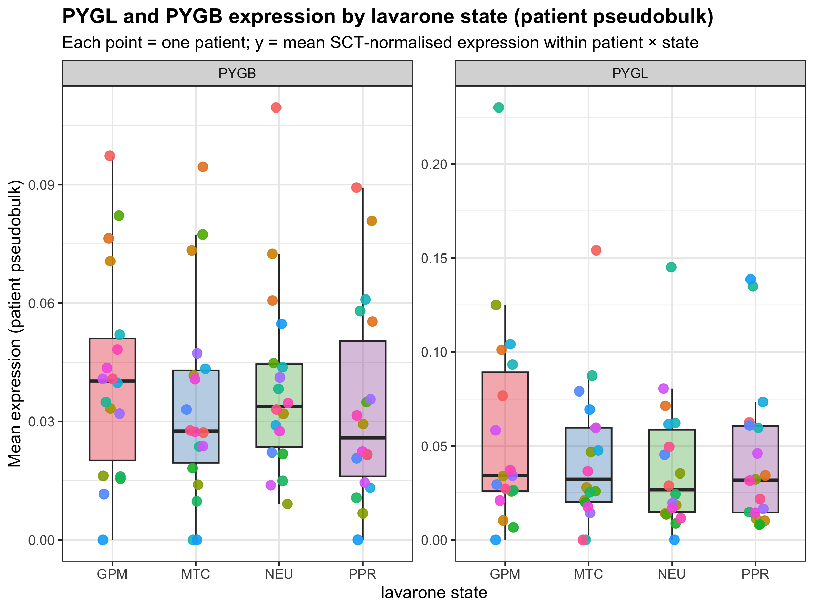

GBM scRNA-seq: Iavarone functional state subtyping
Mikolajewicz cohort · Singh Lab · v1.1
Author
Singh Lab
Published
June 17, 2026
Introduction
Glioblastoma (GBM) is the most common and aggressive primary brain tumour in adults. Malignant cells within a single tumour are not uniform: they sit in different functional states with distinct metabolic programs, neuronal mimicry, or proliferative capacity. Knowing which state a cell is in helps connect molecular targets to biology that is actually active in patient tissue.
Iavarone et al. defined four recurrent GBM tumour-cell states using spatial transcriptomics (CosMx) and validated them in other cohorts:
State
Name
Biological theme
GPM
Glycolytic / plurimetabolic
High glycolysis and flexible nutrient use
MTC
Mitochondrial
Oxidative phosphorylation and mitochondrial metabolism
NEU
Neuronal
Neuronal lineage mimicry / synaptic programs
PPR
Proliferative / progenitor
Cell cycle and DNA replication
We do not reproduce their full single-cell GSEA pipeline here. Instead we score each tumour cell against four published 13-gene signatures and assign the state with the highest score (winner-take-all).
Hypothesis
PYGL (muscle glycogen phosphorylase) and PYGB (brain glycogen phosphorylase) break down glycogen to glucose-1-phosphate, the first step in mobilising stored carbohydrate. The GPM state is defined by glycolytic and plurimetabolic programs, so we expect:
PYGL and PYGB expression should be enriched in GPM-classified tumour cells compared with MTC, NEU, and PPR.
If that holds, glycogen metabolism (and PYGL/PYGB in particular) looks relevant in patient GBM, not just in cell lines.
sessionInfo() above has package versions. Worth keeping if you share or publish these results.
Step 1: Load and inspect the Seurat object
The Seurat object holds expression assays, per-cell meta.data (patient, cell type, QC, etc.), and dimensionality reductions (PCA, UMAP). We print a summary before doing anything else to catch bad paths or missing columns early.
An object of class Seurat
111559 features across 104371 samples within 3 assays
Active assay: SCT (44938 features, 2000 variable features)
3 layers present: counts, data, scale.data
2 other assays present: RNA, integrated
2 dimensional reductions calculated: pca, umap
After the chunks above you should see roughly 10⁵ cells across 18 patients (P1–P8, R1–R11, R9). cell_type includes tumor, neuron, myeloid, oligodendrocyte, astrocyte, and others. The object usually has a normalised RNA assay (SCT or RNA) and may already include UMAP. If not, Step 6 can rebuild it from umap_x / umap_y in metadata.
Step 2: Restrict to tumour cells
Iavarone’s four states describe malignant tumour-cell programs. Neurons, myeloid, oligodendrocytes, and other non-tumour cells express overlapping genes (e.g. neuronal signature genes in real neurons) and would mess up state assignment if left in.
Subset to cell_type == "tumor" (American spelling in this object).
n_before <-ncol(obj)if (!"tumor"%in% obj$cell_type) {stop("'tumor' not found in cell_type. Unique values: ",paste(unique(obj$cell_type), collapse =", ") )}obj_tumor <-subset(obj, subset = cell_type =="tumor")n_after <-ncol(obj_tumor)cat("Cells before tumour subset:", n_before, "\n")
In many GBM snRNA-seq datasets tumour cells are a minority because the TME is cell-rich. In this Mikolajewicz cohort they are often the majority (~70% of cells), but it varies by patient. Either way, n_after is the denominator for all downstream state calls. Sparse patient × state combinations can add noise to pseudobulk later.
Step 3: Load Iavarone signatures
The signature CSV has a slightly odd layout:
Line 1: title row (skip)
Line 2: column headers GPM, MTC, NEU, PPR
Lines 3+: ~13 genes per state; columns can differ in length
GPM: 13 / 13 present in data
MTC: 13 / 13 present in data
NEU: 13 / 13 present in data
PPR: 11 / 13 present in data
Missing: H2AZ1, H4C3
Gene symbols can differ across pipelines (Ensembl vs symbol, alias updates, dropout in snRNA-seq). UCell and AddModuleScore only use genes present in the matrix; missing genes are dropped silently. With only ~13 genes per signature, losing a few can shift scores noticeably. We print missing genes so you can judge how much to trust each state’s score.
Step 4: Score cells against the four signatures
For each cell and signature, module scoring asks whether that gene set is relatively highly expressed.
UCell (AddModuleScore_UCell): rank-based; robust to library size.
AddModuleScore (Seurat): mean signature expression minus matched control genes. Simpler but more sensitive to depth and normalisation.
Both give one numeric score per cell per signature. Higher = stronger evidence for that program.
print(summary(obj_tumor@meta.data[, score_cols, drop =FALSE]))
GPM MTC NEU PPR
Min. :0.00000 Min. :0.00000 Min. :0.00000 Min. :0.00000
1st Qu.:0.00000 1st Qu.:0.00000 1st Qu.:0.05853 1st Qu.:0.00000
Median :0.00000 Median :0.00000 Median :0.07659 Median :0.06307
Mean :0.05107 Mean :0.03036 Mean :0.09823 Mean :0.05804
3rd Qu.:0.07406 3rd Qu.:0.05997 3rd Qu.:0.13813 3rd Qu.:0.08814
Max. :0.57612 Max. :0.35860 Max. :0.58491 Max. :0.69140
Check the summaries for comparable scales. Big outliers might be ambient RNA or doublets.
Step 5: Assign each cell to its top-scoring state
Winner-take-all: iavarone_state is whichever of GPM / MTC / NEU / PPR has the highest score (max.col).
score_mat <-as.matrix(obj_tumor@meta.data[, score_cols, drop =FALSE])# ties go to the first max column (deterministic)top_idx <-max.col(score_mat, ties.method ="first")obj_tumor$iavarone_state <-factor( score_cols[top_idx],levels =c("GPM", "MTC", "NEU", "PPR"))cat("=== Cell counts per state ===\n")
Real cells can be mixed or transitional. One hard label throws away cells where two scores are close. For population-level hypothesis testing that is usually fine; for stratifying drug targets you might keep continuous scores instead.
Step 6: UMAP
UMAP projects high-dimensional expression to 2D. Nearby points are transcriptionally similar. Clean colour separation suggests the signatures capture real variation; heavy mixing suggests gradual or ambiguous states.
Blobs of one colour = cells sharing that program. Intermingled colours = transitions or scoring ambiguity, which is common in GBM.
Step 7: PYGL and PYGB across states
PYGL (liver/muscle isoform) and PYGB (brain isoform) catalyse glycogen breakdown. We test whether they track the GPM state.
Three checks, treating PYGL and PYGB separately:
Pseudobulk plot: mean expression per patient × state. Each point is one patient. Works better than single-cell violins when most cells are zero (dropout).
Paired patient test: within each patient, GPM mean vs pooled non-GPM; then test across patients.
Spearman vs GPM score: expression vs continuous GPM UCell score, no hard state labels.
We skip single-cell violins here. PYGL/PYGB are dropout-heavy and violins mostly show a spike at zero.
if (nrow(pseudobulk) >0) { state_fill <-c(GPM ="#E41A1C", MTC ="#377EB8", NEU ="#4DAF4A", PPR ="#984EA3") p_pb <-ggplot(pseudobulk, aes(x = iavarone_state, y = mean_expression, fill = iavarone_state)) +geom_boxplot(outlier.shape =NA, alpha =0.35, width =0.55) +geom_point(aes(color = sample), position =position_jitter(width =0.12), size =2.8, alpha =0.9) +facet_wrap(~ gene, scales ="free_y") +scale_fill_manual(values = state_fill) +labs(title ="PYGL and PYGB expression by Iavarone state (patient pseudobulk)",subtitle ="Each point = one patient; y = mean SCT-normalised expression within patient × state",x ="Iavarone state",y ="Mean expression (patient pseudobulk)" ) +theme_bw(base_size =12) +theme(legend.position ="none", plot.title =element_text(face ="bold"))print(p_pb)ggsave("figures/pseudobulk_PYGL_PYGB_by_state.png",plot = p_pb,width =9,height =5,dpi =150 )}

Quick numeric comparison (GPM vs others)
if (nrow(pseudobulk) >0) { stats_summary <- pseudobulk %>% dplyr::group_by(gene, iavarone_state) %>% dplyr::summarise(mean_across_patients =mean(mean_expression),median_across_patients =median(mean_expression),n_patients = dplyr::n(),.groups ="drop" )cat("=== Pseudobulk mean expression per state (averaged across patients) ===\n")print(stats_summary) fc_tbl <- pseudobulk %>% dplyr::group_by(gene) %>% dplyr::summarise(n_gpm_obs =sum(iavarone_state =="GPM"),n_non_gpm_obs =sum(iavarone_state !="GPM"),mean_gpm =mean(mean_expression[iavarone_state =="GPM"], na.rm =TRUE),mean_non_gpm =mean(mean_expression[iavarone_state !="GPM"], na.rm =TRUE),fold_change_gpm_vs_rest = mean_gpm / mean_non_gpm,.groups ="drop" )cat("\n=== Fold change (GPM vs other states, pseudobulk) ===\n")print(fc_tbl)for (g inunique(pseudobulk$gene)) { sub <- pseudobulk %>% dplyr::filter(gene == g)if (dplyr::n_distinct(sub$iavarone_state) >=2&&nrow(sub) >=4) { kw <-kruskal.test(mean_expression ~ iavarone_state, data = sub)cat(sprintf("\nKruskal-Wallis for %s across states: p = %.4g\n", g, kw$p.value)) } }}
=== Pseudobulk mean expression per state (averaged across patients) ===
# A tibble: 8 × 5
gene iavarone_state mean_across_patients median_across_patients n_patients
<chr> <fct> <dbl> <dbl> <int>
1 PYGB GPM 0.0417 0.0403 18
2 PYGB MTC 0.0346 0.0275 18
3 PYGB NEU 0.0391 0.0338 18
4 PYGB PPR 0.0337 0.0259 18
5 PYGL GPM 0.0578 0.0341 18
6 PYGL MTC 0.0440 0.0322 18
7 PYGL NEU 0.0393 0.0266 18
8 PYGL PPR 0.0433 0.0319 18
=== Fold change (GPM vs other states, pseudobulk) ===
# A tibble: 2 × 6
gene n_gpm_obs n_non_gpm_obs mean_gpm mean_non_gpm fold_change_gpm_vs_rest
<chr> <int> <int> <dbl> <dbl> <dbl>
1 PYGB 18 54 0.0417 0.0358 1.17
2 PYGL 18 54 0.0578 0.0422 1.37
Kruskal-Wallis for PYGB across states: p = 0.5893
Kruskal-Wallis for PYGL across states: p = 0.7513
A t-test on 50k cells treats cells as independent and inflates significance. Patients (~18) are the real replicates for “is PYGL higher in GPM in GBM patients?”
Paired test: GPM vs non-GPM within each patient
Each patient contributes a GPM mean and a non-GPM mean (MTC + NEU + PPR pooled). Pairing controls for between-patient differences in expression, purity, and treatment. With ~18 patients, n = 18 is the replicate count.
=== Patients included per gene (must have GPM and non-GPM cells) ===
# A tibble: 2 × 2
gene n_patients
<chr> <int>
1 PYGB 18
2 PYGL 18
=== Paired GPM vs non-GPM test results ===
# A tibble: 2 × 7
gene n_patients median_paired_diff fold_change_gpm_vs_rest wilcox_p ttest_p
<chr> <int> <dbl> <dbl> <dbl> <dbl>
1 PYGL 18 0.0113 1.41 0.0366 0.0423
2 PYGB 18 0.00617 1.12 0.163 0.278
# ℹ 1 more variable: verdict <chr>
PYGL: Enrichment in GPM supported
PYGB: Enrichment in GPM not supported
median_paired_diff > 0 means most patients have higher expression in GPM cells. Wilcoxon is the primary test; paired t-test is secondary.
Spearman correlation with GPM score
Hard labels drop nuance. If PYGL tracks the GPM program, expression should correlate with the continuous GPM UCell score even before bucketing into states.
spearman_stats <-NULLgpm_col <-"GPM"if (!gpm_col %in%colnames(obj_tumor@meta.data)) {stop("GPM score column not found in meta.data after module scoring.")}if (length(present_targets) >0) { gpm_scores <- obj_tumor@meta.data[[gpm_col]] spearman_stats <-lapply(present_targets, function(g) { gene_expr <-as.numeric(expr_mat[g, ]) ct <- stats::cor.test(gpm_scores, gene_expr, method ="spearman", exact =FALSE) interp_line <-if (ct$estimate >=0.1&& ct$p.value <0.05) {"Positive correlation with continuous GPM score" } elseif (ct$estimate >0&& ct$p.value <0.05) {"Weak positive rho; significant at large n but small effect" } elseif (ct$estimate >0) {"Weak positive trend; not significant" } else {"No positive tracking of GPM score" } tibble::tibble(gene = g,spearman_rho =unname(ct$estimate),spearman_p = ct$p.value,interpretation = interp_line ) }) %>% dplyr::bind_rows()cat("=== Spearman: GPM UCell score vs gene expression (all tumour cells) ===\n")print(spearman_stats)for (i inseq_len(nrow(spearman_stats))) {cat(sprintf("\n%s: rho = %.3f, p = %.4g (%s)\n", spearman_stats$gene[i], spearman_stats$spearman_rho[i], spearman_stats$spearman_p[i], spearman_stats$interpretation[i] )) }}
=== Spearman: GPM UCell score vs gene expression (all tumour cells) ===
# A tibble: 2 × 4
gene spearman_rho spearman_p interpretation
<chr> <dbl> <dbl> <chr>
1 PYGL 0.105 2.86e-181 Positive correlation with continuous GPM score
2 PYGB 0.0506 5.33e- 43 Weak positive rho; significant at large n but s…
PYGL: rho = 0.105, p = 2.864e-181 (Positive correlation with continuous GPM score)
PYGB: rho = 0.051, p = 5.332e-43 (Weak positive rho; significant at large n but small effect)
Positive Spearman rho means expression rises with GPM program strength. That can be more informative than categorical labels when states form gradients on the UMAP.
Step 8: Interpretation
interp <-list(n_tumor =ncol(obj_tumor),n_patients =length(unique(obj_tumor$sample)),state_props =round(prop.table(table(obj_tumor$iavarone_state)) *100, 1),scoring = scoring_method,umap = umap_source)if (exists("fc_tbl") &&nrow(fc_tbl) >0) interp$fc <- fc_tblif (exists("paired_stats") &&nrow(paired_stats) >0) interp$paired <- paired_statsif (exists("spearman_stats") &&nrow(spearman_stats) >0) interp$spearman <- spearman_statsfmt_paired <-function(g) {if (is.null(paired_stats) ||!g %in% paired_stats$gene) return(paste0(g, " paired statistics not available.")) row <- paired_stats[paired_stats$gene == g, ]paste0("**Paired test (n = ", row$n_patients, " patients):** ","median diff (GPM − rest) = ", round(row$median_paired_diff, 4),"; fold-change = ", round(row$fold_change_gpm_vs_rest, 2),"; Wilcoxon p = ", format.pval(row$wilcox_p, digits =3)," (paired t-test p = ", format.pval(row$ttest_p, digits =3), "). ","**Verdict: ", row$verdict, ".**" )}fmt_spearman <-function(g) {if (is.null(spearman_stats) ||!g %in% spearman_stats$gene) return("") row <- spearman_stats[spearman_stats$gene == g, ]paste0("**Spearman vs GPM score:** rho = ", round(row$spearman_rho, 3),", p = ", format.pval(row$spearman_p, digits =3),". ", row$interpretation, "." )}pygl_paired_line <-fmt_paired("PYGL")pygb_paired_line <-fmt_paired("PYGB")pygl_spearman_line <-fmt_spearman("PYGL")pygb_spearman_line <-fmt_spearman("PYGB")pygl_verdict <-if (!is.null(paired_stats) &&"PYGL"%in% paired_stats$gene) { paired_stats$verdict[paired_stats$gene =="PYGL"]} elseNA_character_pygb_verdict <-if (!is.null(paired_stats) &&"PYGB"%in% paired_stats$gene) { paired_stats$verdict[paired_stats$gene =="PYGB"]} elseNA_character_pygl_narrative <-if (identical(pygl_verdict, "Enrichment in GPM supported")) {"PYGL is higher in GPM than non-GPM cells at the patient level, and expression tracks the continuous GPM score. Glycogen mobilisation via PYGL fits the GPM program in patient GBM."} else {"PYGL does not reach significance for GPM enrichment in this cohort. Check effect direction and the pseudobulk plot before concluding."}pygb_narrative <-if (identical(pygb_verdict, "Enrichment in GPM supported")) {"PYGB is enriched in GPM at the patient level."} else {"PYGB trends toward GPM in pseudobulk but does not pass the paired patient test. Do not treat it the same as PYGL when discussing targets."}cat("=== Key numbers for interpretation ===\n")
=== Key numbers for interpretation ===
str(interp, max.level =2)
List of 8
$ n_tumor : int 73784
$ n_patients : int 18
$ state_props: 'table' num [1:4(1d)] 25.4 7.8 43.1 23.6
..- attr(*, "dimnames")=List of 1
$ scoring : chr "UCell (rank-based; robust to sequencing depth)"
$ umap : chr "Existing 'umap' reduction in Seurat object"
$ fc : tibble [2 × 6] (S3: tbl_df/tbl/data.frame)
$ paired : tibble [2 × 7] (S3: tbl_df/tbl/data.frame)
$ spearman : tibble [2 × 4] (S3: tbl_df/tbl/data.frame)
Summary
Classified 73784 tumour cells from 18 patients using UCell (rank-based; robust to sequencing depth).
State distribution (winner-take-all):
GPM: 18753 cells (25.4%)
MTC: 5751 cells (7.8%)
NEU: 31837 cells (43.1%)
PPR: 17443 cells (23.6%)
UMAP
On figures/umap_states.png, GPM, NEU, and MTC often intermingle while PPR tends to separate. That matches other GBM work (e.g. Neftel et al.): proliferation is a discrete cell-cycle program, while metabolic and neuronal-mimicry states look more like gradients. Winner-take-all labels oversimplify those states, which is why we also ran Spearman on the continuous GPM score.
PYGL
Prediction: PYGL should be enriched in GPM.
Paired test (n = 18 patients): median diff (GPM − rest) = 0.0113; fold-change = 1.41; Wilcoxon p = 0.0366 (paired t-test p = 0.0423). Verdict: Enrichment in GPM supported.
Spearman vs GPM score: rho = 0.105, p = <2e-16. Positive correlation with continuous GPM score.
PYGL is higher in GPM than non-GPM cells at the patient level, and expression tracks the continuous GPM score. Glycogen mobilisation via PYGL fits the GPM program in patient GBM.
PYGB
Prediction: PYGB should also be enriched in GPM.
Paired test (n = 18 patients): median diff (GPM − rest) = 0.0062; fold-change = 1.12; Wilcoxon p = 0.163 (paired t-test p = 0.278). Verdict: Enrichment in GPM not supported.
Spearman vs GPM score: rho = 0.051, p = <2e-16. Weak positive rho; significant at large n but small effect.
PYGB trends toward GPM in pseudobulk but does not pass the paired patient test. Do not treat it the same as PYGL when discussing targets.
Caveats
Issue
Why it matters
Small signatures (~13 genes)
PPR missing H2AZ1/H4C3; a few dropouts shift scores.
Winner-take-all
Metabolic states are continuous; labels oversimplify (see UMAP).
n ≈ 18 patients
Limited power; report effect sizes, not just p-values.
Uneven cells per patient × state
Some pseudobulk / paired means average few cells.
snRNA-seq dropout
Glycogen genes are often detected in a minority of nuclei.
Takeaways
PYGL: Paired testing and GPM score correlation support enrichment in GPM.
PYGB: No clear state enrichment for PYGB; keep PYGL and PYGB as separate hypotheses.
UMAP: PPR separation with mixed metabolic states is expected. Use continuous GPM scores alongside labels when prioritising targets.